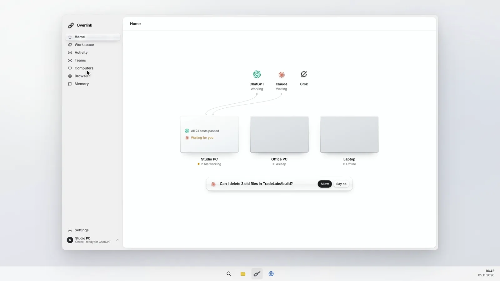
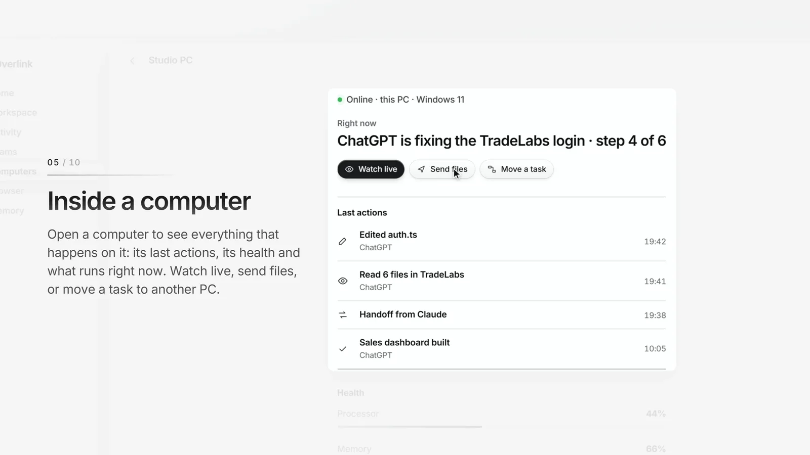
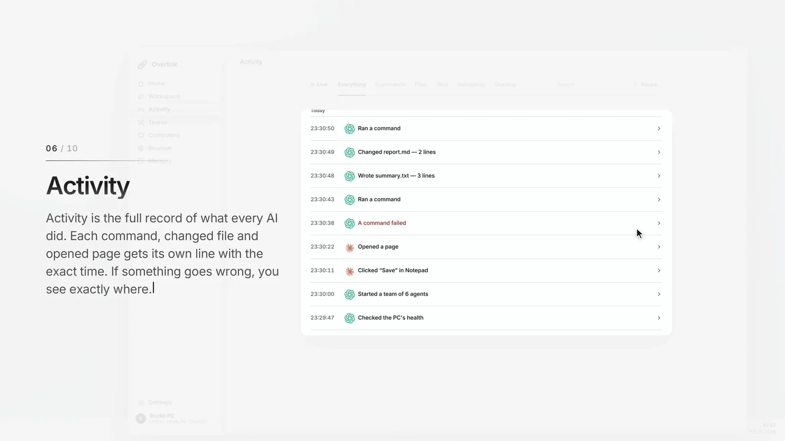

Desktop agent
Overlink
The link between AI and your computers. The AI chats you already use work on your own PCs, and you stay in control.
Working on my own PCs · private beta soonWebsite: overlinkapp.comThe app, part by part
Your AIThe AI chats you already use
Your PCsMany computers, one link
Your callEvery action recorded and approved
The problem
AI chats can explain how to fix something, but they can't touch your computer. Coding agents can, but they hit usage limits fast and work on one machine at a time.
What I built
- The AI chats you already use work on your own Windows PCs: files, terminal and browser.
- Many computers connect through one link. Send files between them and move a task to another PC.
- Every action is recorded in plain words, and risky steps wait for your OK.
- Live view per PC: health, last actions and what is running right now.
How it works
A Windows app (C#, WebView2) runs on each PC. A Node.js service exposes its tools over MCP, and the AI chat connects to that link. A permission layer checks each request before it runs, and an activity log stores what happened.
Status and proof
- In daily use across my own PCs.
- 900+ automated tests (Node.js and Python).
- Product videos above; public overview on GitHub.


